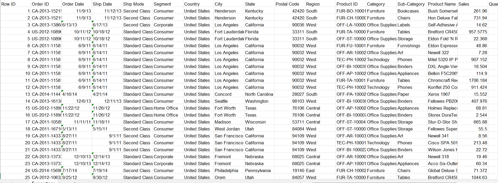
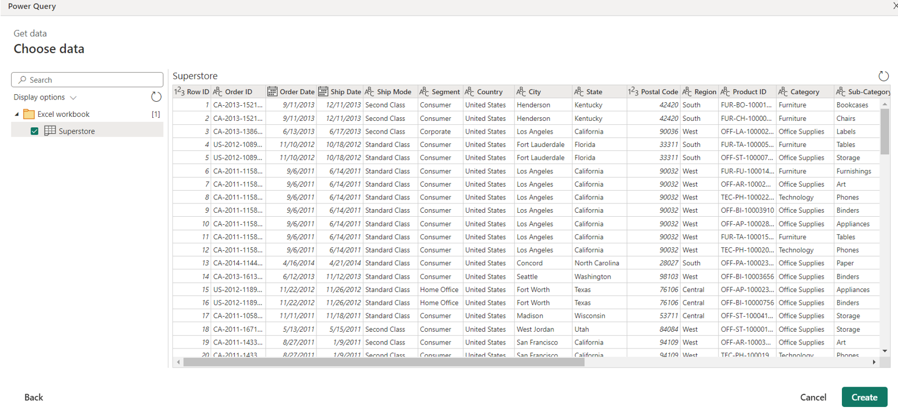
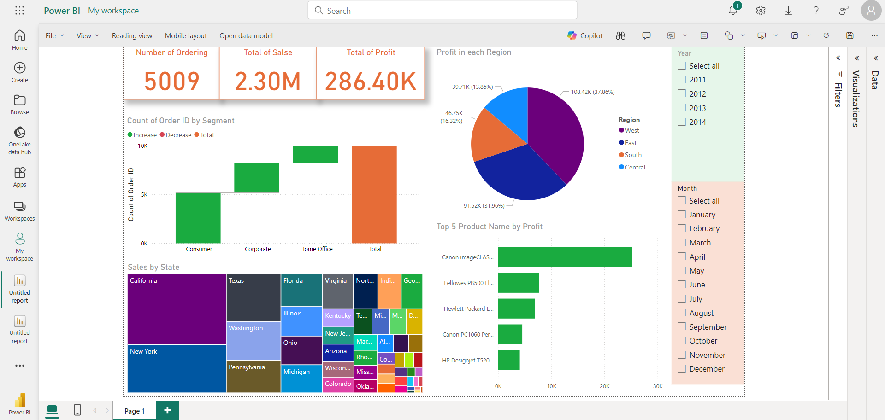

This is the project in Business Data Analytics Course (March 2024)
I have the Superstore dataset, In which I have replaced the missing value with the average value.
The example of Superstore dataset
I import the Superstore dataset to Microsoft Power BI to create dashboard
This is my Visualization and I use 6 type to crate dashboard
- Card : Show number and total
- Waterfall Chart : Show count odering by segment
- Tree Map : To find sale by state
- Pie Chart : Show the profit each region
- Stacked Bar chart : Show top 5 product name by profit
- Slicer : To create what I want to see and select such as year or month
